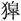

。
。春秋公羊传卷十五
宣公上
宣公元年
春，王正月，公即位。继弑君不言即位，此其言即位何？其意也。公子遂如齐逆女。
三月，遂以夫人妇姜至自齐。遂何以不称公子？一事而再见者，卒名也。夫人何以不称姜氏？贬。曷为贬？丧娶也。丧娶者公也，则曷为贬夫人？内无贬于公之道也。内无贬于公之道则曷为贬夫人？夫人与公一体也。其称妇何？有姑之辞也。
夏，季孙行父如齐。
晋放其大夫胥甲父于卫。放之者何？犹曰无去是云尔。然则何言尔？近正也。此其为近正奈何？古者大夫已去，三年待放。君放之非也，大夫待放正也。古者臣有大丧，则君三年不呼其门。已练可以弁冕，服金革之事。君使之，非也，臣行之，礼也。闵子要绖而服事。既而曰：“若此乎古之道，不即人心。”退而致仕。孔子盖善之也。
公会齐侯于平州。
公子遂如齐。
六月，齐人取济西田。外取邑不书，此何以书？所以赂齐也。曷为赂齐？为弑子赤之赂也。
秋，邾娄子来朝。
楚子、郑人侵陈，遂侵宋。
晋赵盾帅师救陈。宋公、陈侯、卫侯、曹伯会晋师于斐林，伐郑。此晋赵盾之师也。曷为不言赵盾之师？君不会大夫之辞也。
冬，晋赵穿帅师侵柳。柳者何？天子之邑也。曷为不系乎周？不与伐天子也。
晋人、宋人伐郑。
宣公二年
春，王二月壬子，宋华元帅师及郑公子归生帅师战于大棘，宋师败绩，获宋华元。
秦师伐晋。
夏，晋人、宋人、卫人、陈人侵郑。
秋九月乙丑，晋赵盾弑其君夷獋。
冬十月乙亥，天王崩。
宣公三年
春，王正月，郊牛之口伤，改卜牛，牛死，乃不郊，犹三望。其言之何？缓也。曷为不复卜？养牲养二卜。帝牲不吉，则扳稷牲而卜之。帝牲在于涤三月，于稷者唯具是视。郊则曷为必祭稷？王者必以其祖配。王者则曷为必以其祖配？自内出者无匹不行，自外至者无主不止。
葬匡王。
楚子伐贲浑戎。
夏，楚人侵郑。
秋，赤狄侵齐。
宋师围曹。
冬十月丙戌，郑伯兰卒。
葬郑缪公。
宣公四年
春，王正月，公及齐侯平莒及郯。莒人不肯，公伐莒，取向。此平莒也，其言不肯何？辞取向也。
秦伯稻卒。
夏天六月乙酉，郑公子归生弑其君夷。
赤狄侵齐。
秋，公如齐。
公至自齐。
冬，楚子伐郑。
宣公五年
春，公如齐。
夏，公至自齐。
秋九月，齐高固来逆子叔姬。
叔孙得臣卒。
冬，齐高固及子叔姬来。何言乎高固之来？言叔姬之来而不言高固之来则不可。子公羊子曰：“其诸为其双双而俱至者与？”
楚人伐郑。
宣公六年
春，晋赵盾、卫孙免侵陈。赵盾弑君，此其复见何？亲弑君者赵穿也。亲弑君者赵穿，则曷为加之赵盾？不讨贼也。何以谓之不讨贼？晋史书贼曰“晋赵盾弑其君夷。”赵盾曰：“天乎！无辜！吾不弑君，谁谓吾弑君者乎？”史曰：“尔为仁为义，人弑尔君，而复国不讨贼，此非弑君如何？”赵盾之复国奈何？灵公为无道，使诸大夫皆内朝，然后处乎台上，引弹而弹之，已趋而辟丸，是乐而已矣。赵盾已朝而出，与诸大夫立于朝，有人荷畚，自闺而出者。赵盾曰：“彼何也，夫畚曷为出乎闺？”呼之不至，曰：“子大夫也，欲视之则就而视之。”赵盾就而视之，则赫然死人也。赵盾曰：“是何也？”曰：“膳宰也，熊蹯不熟，公怒，以斗摮而杀之，支解，将使我弃之。”赵盾曰：“嘻！”趋而入。灵公望见赴盾愬而再拜。赵盾逡巡北面再拜稽首，趋而出，灵公心怍焉，欲杀之。于是使勇士某者往杀之，勇士入其大门，则无人门焉者；入其闺，则无人闺焉者；上其堂，则无人焉。俯而窥其户，方食鱼飧。勇士曰：“嘻！子诚仁人也！吾入子之大门，则无人焉；入子之闺，则无人焉；上子之堂，则无人焉；是子之易也。子为晋国重卿而食鱼飧，是子之俭也。君将使我杀子，吾不忍杀子也。虽然，吾亦不可复见吾君矣。”遂刎颈而死。灵公闻之怒，滋欲杀之甚，众莫可使往者。于是伏甲于宫中，召赵盾而食之。赵盾之车右祁弥明者，国之力士也，仡然从乎赵盾而入，放乎堂下而立。赵盾已食，灵公谓盾曰：“吾闻子之剑，盖利剑也，子以示我，吾将观焉。”赵盾起将进剑，祁弥明自下呼之曰：“盾食饱则出，何故拔剑于君所？”赵盾知之，躇阶而走。灵公有周狗，谓之獒，呼獒而属之，獒亦躇阶而从之。祁弥明逆而踆之，绝其颔。赵盾顾曰：“君之獒不若臣之獒也！”然而宫中甲鼓而起，有起于甲中者抱赵盾而乘之。赵盾顾曰：“吾何以得此于子？”曰：“子某时所食活我于暴桑下者也。”赵盾曰：“子名为谁？”曰：“吾君孰为介？子之乘矣，何问吾名？”赵盾驱而出，众无留之者。赵穿缘民众不说，起弑灵公，然后迎赵盾而入，与之立于朝，而立成公黑臀。
夏四月。
秋八月，。
冬十月。
宣公七年
春，卫侯使孙良夫来盟。
夏，公会齐侯伐莱。
秋，公至自伐莱。
大旱。
冬，公会晋侯、宋公、卫侯、郑伯、曹伯于黑壤。
宣公八年
春，公至自会。
夏六月，公子遂如齐，至黄乃复。其言至黄乃复何？有疾也。何言乎有疾乃复？讥。何讥尔？大夫以君命出，闻丧徐行而不反。
辛巳，有事于太庙。
仲遂卒于垂。仲遂者何？公子遂也。何以不称公子？贬。曷为贬？为弑子赤贬。然则曷为不于其弑焉贬？于文则无罪。于子则无年。
壬午，犹绎。《万》入去“籥”。绎者何？祭之明日也。《万》者何？干舞也。“籥”者何？“籥”舞也。其言《万》入去“籥”何？去其有声者，废其无声者，存其心焉尔。存其心焉尔者何？知其不可而为之也。犹者何？通可以已也。
戊子，夫人熊氏薨。
晋师、白狄伐秦。
楚人灭舒、蓼。
秋七月甲子，日有食之，既。
冬十月己丑，葬我小君顷熊。雨，不克葬。庚寅，日中而克葬。顷熊者何？宣公之母也。而者何？难也。乃者何？难也。曷为或言而或言乃？乃难乎而也。
城平阳。
楚国伐陈。
宣公九年
春，王正月，公如齐。
公至自齐。
夏，仲孙蔑如京师。
齐侯伐莱。
秋，取根牟。根牟者何？邾娄之邑也。曷为不系乎邾娄？讳亟也。
八月，滕子卒。
九月，晋侯、宋公、卫侯、郑伯、曹伯会于扈。
晋荀林父帅师伐陈。
辛酉，晋侯黑臀卒于扈。扈者何？晋之邑也。诸侯卒其封内不地，此何以地？卒于会，故地也。未出其地，故不言会也。
冬十月癸酉，卫侯郑卒。
宋人围滕。
楚子伐郑。
晋郤缺帅师救郑。
陈杀其大夫泄冶。